Inauguration of the Commemoration Rose Garden, 5 November 2022, with the Paris Branch on its 100th anniversary.
Inauguration of the Commemoration Rose Garden, 5 November 2022, with the Paris Branch on its 100th anniversary.
Inauguration of the Commemoration Rose Garden 5 November 2022
Inauguration de la roseraie commémorative 5 November 2022
With the participation of the Royal British Legion Paris Branch on its 100th anniversary
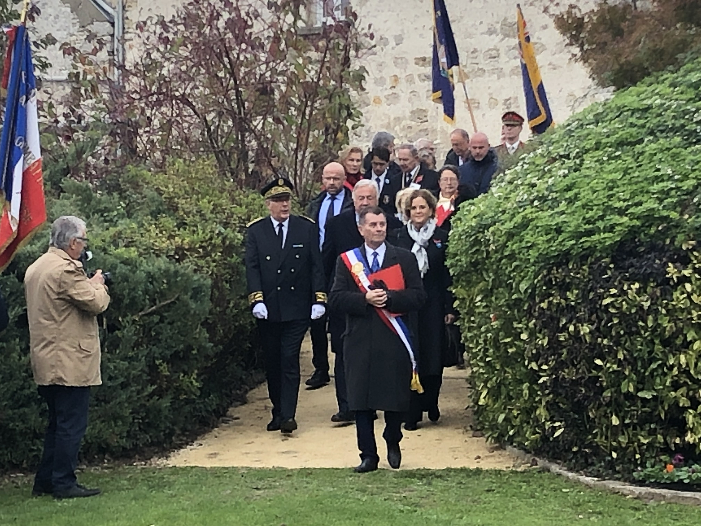
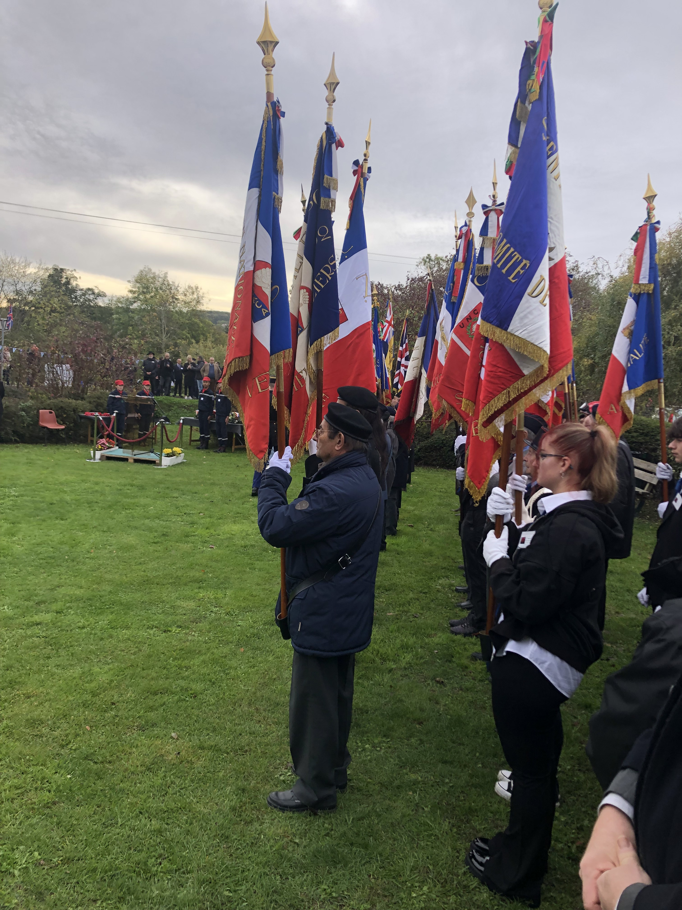
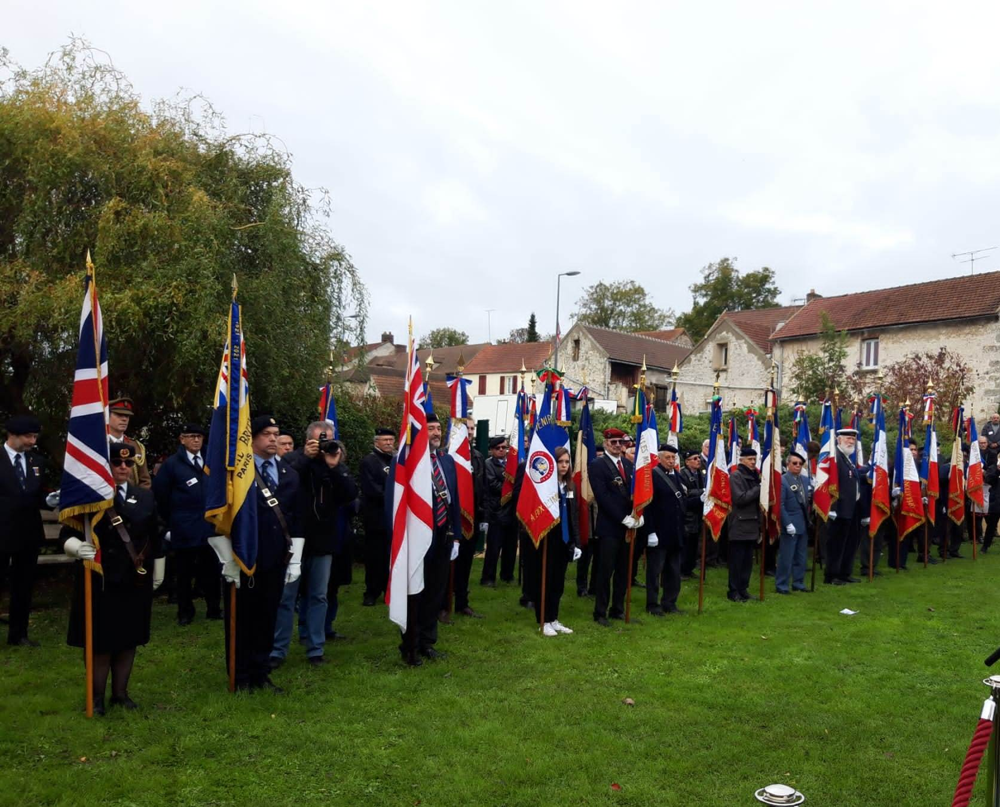
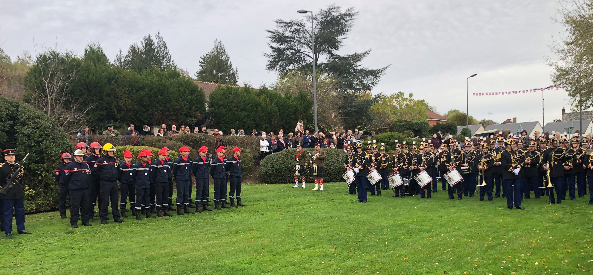
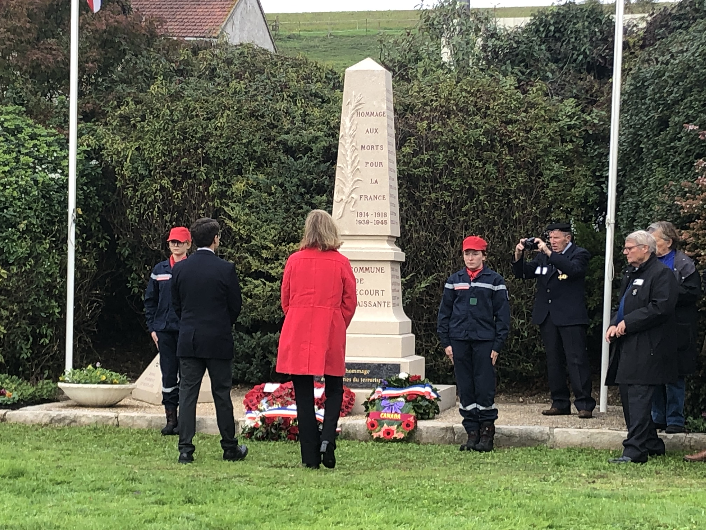
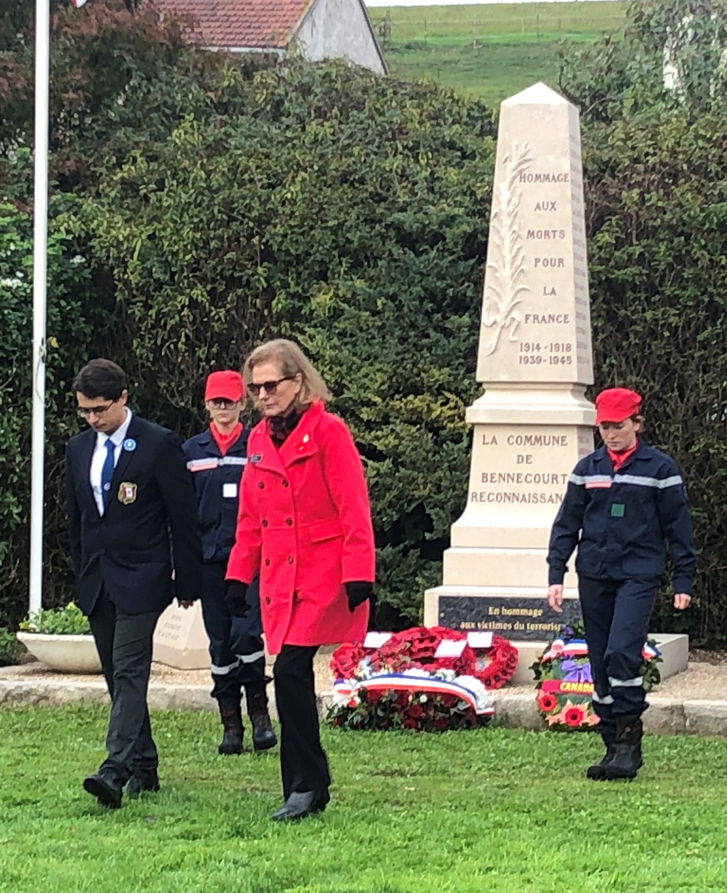
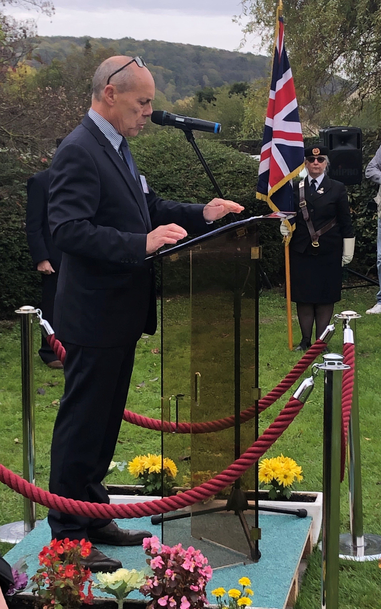
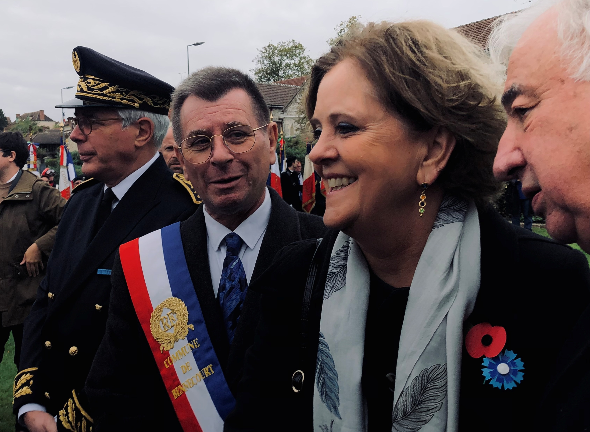
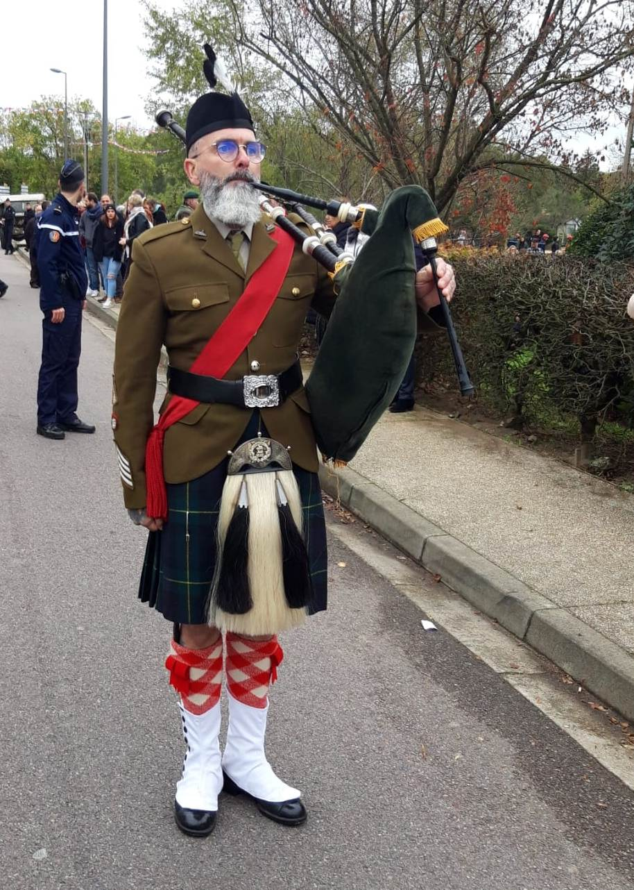
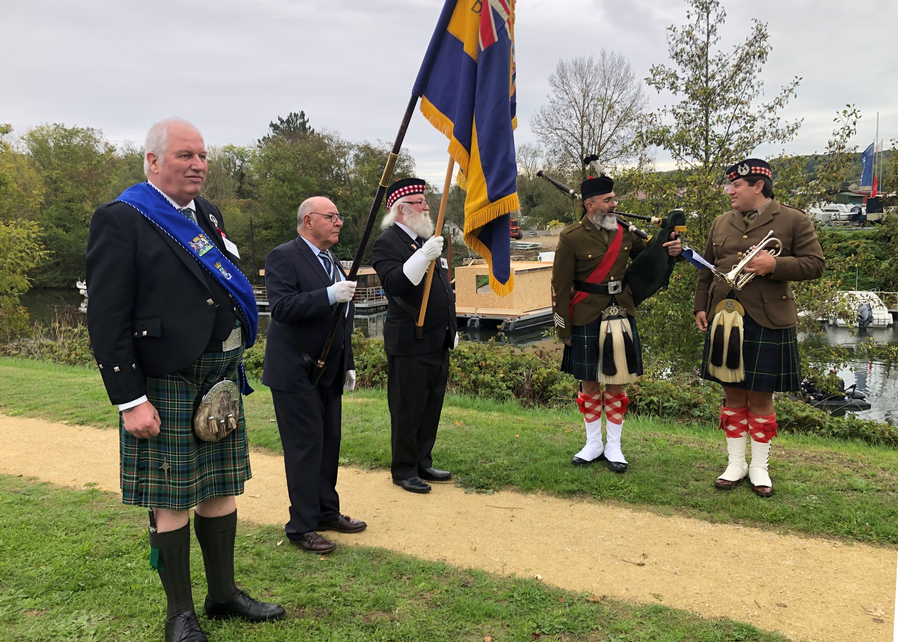
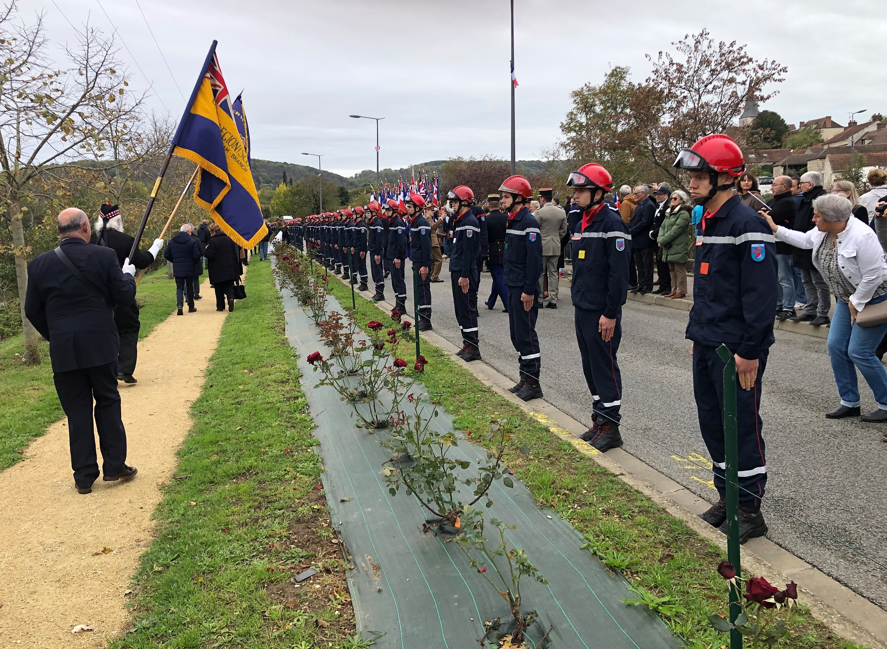

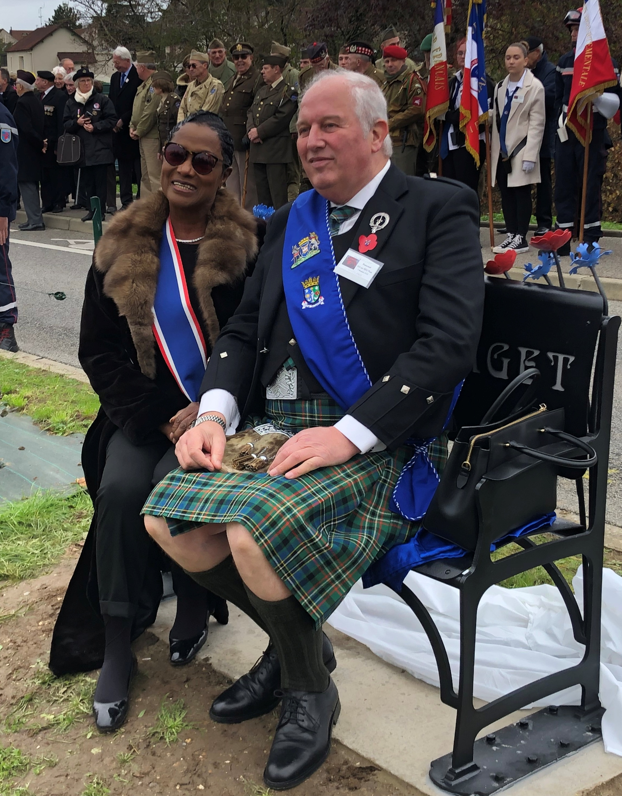